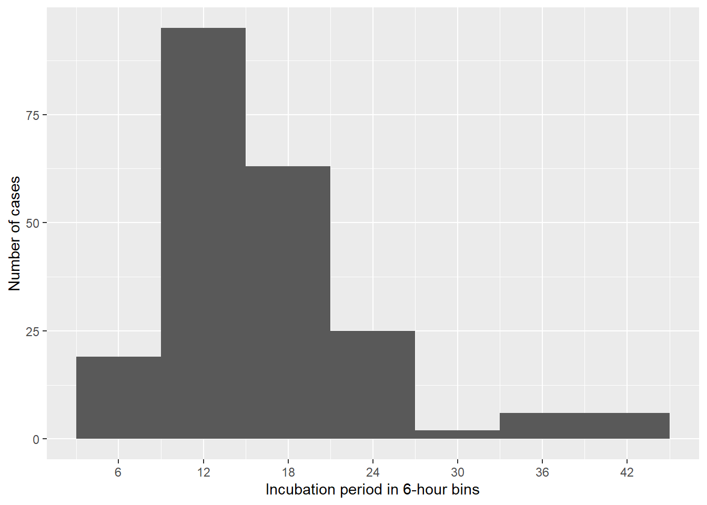
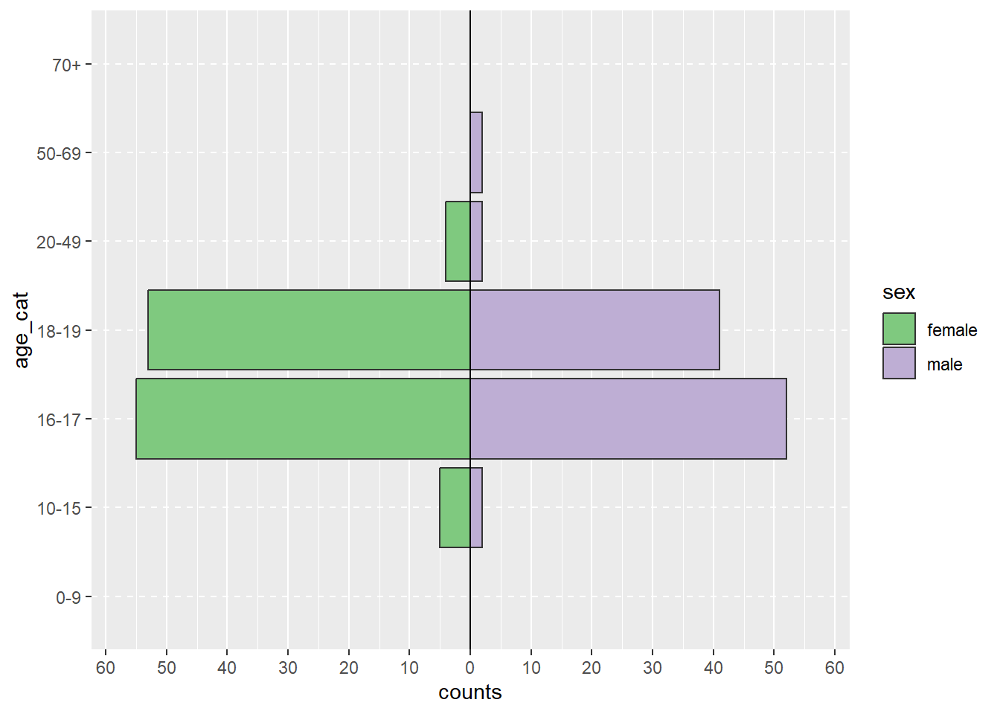
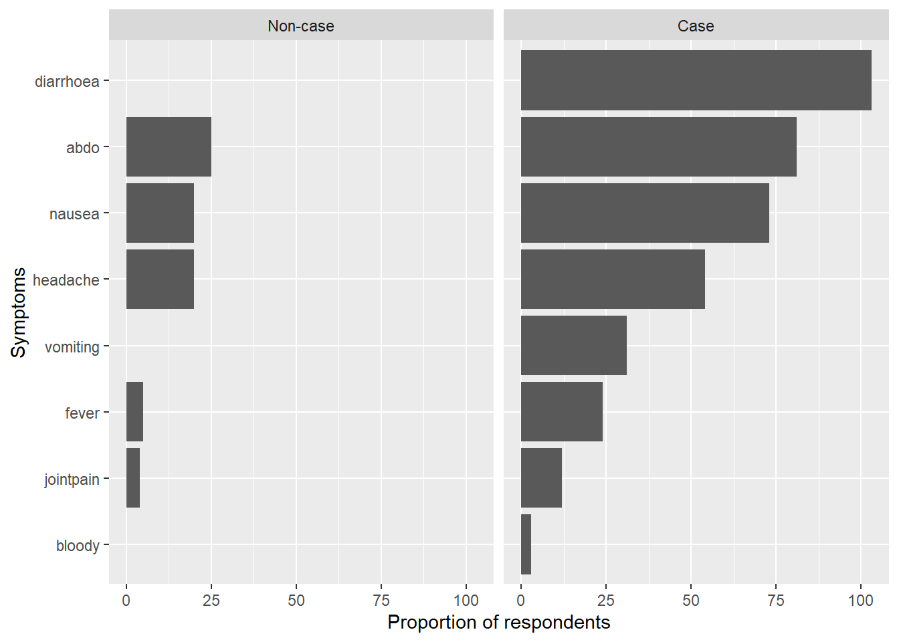

# Load the required libraries into the current R session:
pacman::p_load(rio,
here,
tidyverse,
skimr,
plyr,
janitor,
lubridate,
gtsummary,
flextable,
officer,
epikit,
apyramid,
scales)Descriptive analysis - Inj11
1. Install packages and load libraries
2. Import your data
# Import the clean data set:
copdata <- rio::import(here::here("data", "Copenhagen_clean2.rds")) 3. Time
a) Incubation period histogram
#| label: inc_time
# Create a dataset with only cases
cases <- copdata %>%
filter(case == TRUE)
incplot <- cases %>%
# Create an empty ggplot frame:
ggplot() +
# Add a histogram of incubation:
geom_histogram(
mapping = aes(x = incubation),
# Set bin widths to 6 hours:
binwidth = 6) +
# Adapt scale to better fit data
scale_x_continuous(breaks = seq(0, 48, 6)) +
# Label x and y axes:
labs(x = "Incubation period in 6-hour bins",
y = "Number of cases")
# Print plot:
incplot
b) Epicurve for date and time of onset
# Create a vector with sequences every 6h from the first to the last case
breaks_6h <- seq(from = min(cases$onset_datetime, na.rm = TRUE),
to = max(cases$onset_datetime, na.rm = TRUE),
by = "6 hours")
# Fetch cases data:
epicurve_datetime <- cases %>%
# Add factor onset_datetime to ggplot aesthetic:
ggplot(
mapping = aes(x = onset_datetime)) +
# Add geom_histogram:
geom_histogram(
# Apply the vector of requences created above
breaks = breaks_6h) +
# Adapt scale to data and adjust axis label angle:
scale_x_datetime(
date_breaks = "6 hours",
labels = label_date_short()) +
# Update x and y axis labels:
labs(x = "Date and time of onset symptoms",
y = "Number of cases") +
# Remove unnecessary grid lines:
theme_bw()
# Print epicurve:
epicurve_datetime
epicurve_strata <- cases %>%
# Add factor onset_day to ggplot aesthetic:
ggplot(
mapping = aes(x = onset_datetime, fill = group)) +
# Add nicer fill colours:
scale_fill_manual(values = c("darkred", "lightblue")) +
# Add geom_histogram:
geom_histogram(
# Apply the vector of requences created above
breaks = breaks_6h) +
# Adjust x axis scales to a suitable unit:
scale_x_datetime(
date_breaks = "6 hours",
labels = label_date_short()) +
# Update x and y axis labels:
labs(x = "Date and time of onset",
y = "Number of cases",
fill = "Group",
title = "Epicurve of the outbreak, stratified by sex",
subtitle = str_glue("Copenhagen, November 2006, N = {sum(copdata$case)}")) +
# Stratify by sex:
facet_wrap(facets = "sex",
ncol = 2) +
# Add theme:
theme_bw()
# Print epicurve:
epicurve_strata 
4. Person
a) Cross-tabulation of cases with group
copdata %>%
janitor::tabyl(case, group) %>%
adorn_totals() %>%
adorn_percentages() %>%
adorn_pct_formatting() case teacher student
FALSE 5.6% 94.4%
TRUE 2.8% 97.2%
Total 4.0% 96.0%b) Cross-tabulation of cases with sex
copdata %>%
janitor::tabyl(case, sex) %>%
adorn_totals() %>%
adorn_percentages() %>%
adorn_pct_formatting() case female male
FALSE 59.6% 40.4%
TRUE 54.2% 45.8%
Total 56.5% 43.5%c) Extra - Age-sex pyramid of cases
copdata <- copdata %>%
# Create age categories:
mutate(age_cat = epikit::age_categories(
# Name of age column:
x = age,
# Define the age categories:
breakers = c(0, 10, 16, 18, 20, 50, 70)
)
)
# Check age categories:
janitor::tabyl(copdata, age_cat) age_cat n percent
0-9 0 0.00000000
10-15 11 0.02917772
16-17 201 0.53315650
18-19 147 0.38992042
20-49 11 0.02917772
50-69 7 0.01856764
70+ 0 0.00000000# Pipe copdata:
agesex <- copdata %>%
# Filter for cases only:
filter(case == TRUE) %>%
# Create age sex pyramid:
apyramid::age_pyramid(
# Specify column containing age categories:
age_group = "age_cat",
# Specify column containing sex:
split_by = "sex",
# Don't show midpoint on the graph:
show_midpoint = FALSE
)
# Print plot:
agesex
(Hint: change show_midpoint = FALSE to TRUE to see skewedness in the data patterns more easily).
5. Symptoms
- Summary table of symptoms, stratified by case definition
# Create summary table:
tabsymptoms <- copdata %>%
# Select person characteristics to summarise:
select(case, diarrhoea, bloody, vomiting,
abdo, nausea, fever,headache, jointpain) %>%
# transform clinical symptoms to factors, so NA can be accounted properly in the table
dplyr::mutate(
across(.cols = c(diarrhoea, bloody, vomiting,
abdo, nausea, fever,headache, jointpain),
.fns = ~as.factor(.))) %>%
# Make NA a explicit level of factor variables
dplyr::mutate(
across(.cols = c(diarrhoea, bloody, vomiting,
abdo, nausea, fever,headache, jointpain),
.fns = ~forcats::fct_na_value_to_level(.))) %>%
# Create the summary table:
gtsummary::tbl_summary(
# Stratify by case:
by = case,
# Calculate row percentages:
percent = "column",
# Create nice labels:
label = list(
diarrhoea ~ "Diarrhoea",
bloody ~ "Dysentary",
vomiting ~ "Vomiting",
abdo ~ "Abdominal pain",
nausea ~ "Nausea",
fever ~ "Fever",
headache ~ "Headache",
jointpain ~ "Joint pain")
) %>%
# Add totals:
add_overall() %>%
# Make variable names bold and italics:
bold_labels() %>%
italicize_labels() %>%
# Modify header:
modify_header(
label = "**Characteristic**",
stat_0 = "**Overall**\n **N** = {N}",
stat_1 = "**Non-case**\n **N** = {n}",
stat_2 = "**Case**\n **N** = {n}",
)
# Print the table:
tabsymptoms| Characteristic | Overall N = 3771 | Non-case N = 1611 | Case N = 2161 |
|---|---|---|---|
| Diarrhoea | |||
| FALSE | 46 (18%) | 40 (100%) | 6 (2.8%) |
| TRUE | 206 (82%) | 0 (0%) | 206 (97%) |
| Dysentary | |||
| FALSE | 189 (97%) | 42 (100%) | 147 (97%) |
| TRUE | 5 (2.6%) | 0 (0%) | 5 (3.3%) |
| Vomiting | |||
| FALSE | 149 (69%) | 42 (100%) | 107 (62%) |
| TRUE | 66 (31%) | 0 (0%) | 66 (38%) |
| Abdominal pain | |||
| FALSE | 35 (14%) | 6 (12%) | 29 (15%) |
| TRUE | 207 (86%) | 44 (88%) | 163 (85%) |
| Nausea | |||
| FALSE | 55 (25%) | 12 (26%) | 43 (24%) |
| TRUE | 169 (75%) | 34 (74%) | 135 (76%) |
| Fever | |||
| FALSE | 127 (74%) | 32 (80%) | 95 (73%) |
| TRUE | 44 (26%) | 8 (20%) | 36 (27%) |
| Headache | |||
| FALSE | 83 (38%) | 11 (25%) | 72 (41%) |
| TRUE | 137 (62%) | 33 (75%) | 104 (59%) |
| Joint pain | |||
| FALSE | 159 (85%) | 32 (84%) | 127 (85%) |
| TRUE | 29 (15%) | 6 (16%) | 23 (15%) |
| 1 n (%) | |||
- Bar plot of symptoms stratified by case definition
# Create list of symptom variables:
symptoms <- c("diarrhoea",
"bloody",
"vomiting",
"abdo",
"nausea",
"fever",
"headache",
"jointpain")
# Create nice labels for case definition:
caselabs <- ggplot2::as_labeller(c(`FALSE` = "Non-case",
`TRUE` = "Case"))
# Select variables and cases:
symptom_bar <- copdata %>%
# Select symptom columns:
select(case, c(all_of(symptoms))) %>%
# Drop NAs:
drop_na() %>%
# Reshape (pivot longer):
pivot_longer(!case,
names_to = "Symptoms",
values_drop_na = TRUE) %>%
# Keep only TRUE values:
filter(value == TRUE) %>%
# Group by symptoms and case:
group_by(Symptoms, case) %>%
# Count for each symptom by case:
dplyr::summarise(count = n()) %>%
# Create plot:
ggplot(
mapping = aes(
# Order symptom bars so most common ones are ontop:
x = reorder(Symptoms, desc(count), decreasing = TRUE),
y = count)) +
# Display bars as proportions
geom_bar(stat = "identity") +
# Update x axis label:
xlab("Symptoms") +
# Update y axis label:
ylab("Proportion of respondents") +
# Flip plot on its side so symptom labels are clear:
coord_flip() +
# Facet the plot by (labelled) case:
facet_wrap(facets = "case",
labeller = caselabs,
ncol = 2)`summarise()` has grouped output by 'Symptoms'. You can override using the
`.groups` argument.# Print plot:
symptom_bar
6. Attack proportions
- Overall attack proportion
# Create table of case status:
total_ap <- tabyl(copdata, case) %>%
# Add row totals:
adorn_totals(where = "row") %>%
# Add percentages with 1 digit after the decimal point:
adorn_pct_formatting(digits = 1) %>%
# Filter to rows where case is TRUE:
filter(case == TRUE) %>%
# Select the column percent:
select(percent) %>%
# Extract (pull) the value from this cell:
pull()
# Print result:
total_ap[1] "57.3%"- Attack proportions for class, group and sex by case status
# Table to calculate attack proportions:
attack_prop <- copdata %>%
# Select columns:
select (case, class, group, sex) %>%
# Create table:
tbl_summary(
# Stratified by case
by = case,
# with row percentages
percent = "row") %>%
# Add totals:
add_overall() %>%
# Make variable names bold and italics:
bold_labels() %>%
italicize_labels() %>%
# Modify header:
modify_header(
label = "**Characteristic**",
stat_0 = "**Overall** **N** = {N}",
stat_1 = "**Non-case** **N** = {n}",
stat_2 = "**Case** **N** = {n}"
)
# Print table:
attack_prop| Characteristic | Overall N = 3771 | Non-case N = 1611 | Case N = 2161 |
|---|---|---|---|
| class | |||
| 1 | 131 (100%) | 63 (48%) | 68 (52%) |
| 2 | 101 (100%) | 44 (44%) | 57 (56%) |
| 3 | 111 (100%) | 38 (34%) | 73 (66%) |
| Unknown | 34 | 16 | 18 |
| group | |||
| teacher | 15 (100%) | 9 (60%) | 6 (40%) |
| student | 362 (100%) | 152 (42%) | 210 (58%) |
| sex | |||
| female | 213 (100%) | 96 (45%) | 117 (55%) |
| male | 164 (100%) | 65 (40%) | 99 (60%) |
| 1 n (%) | |||